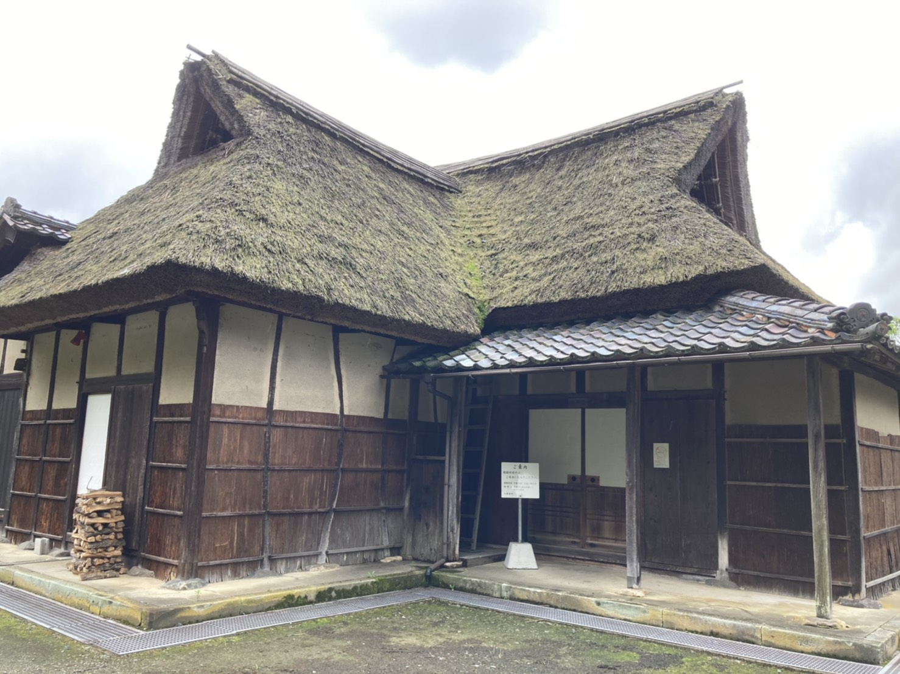
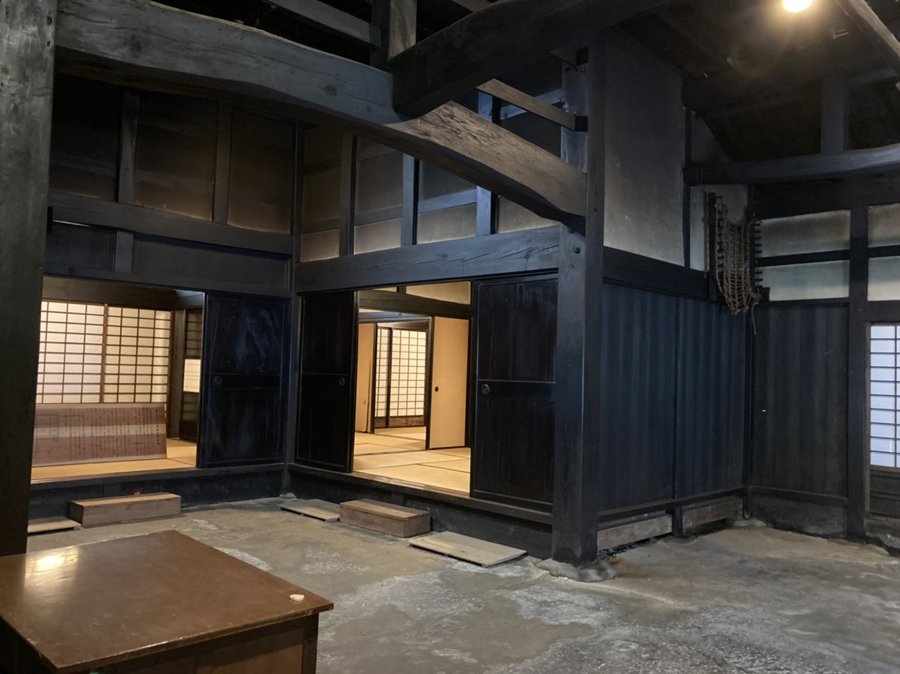
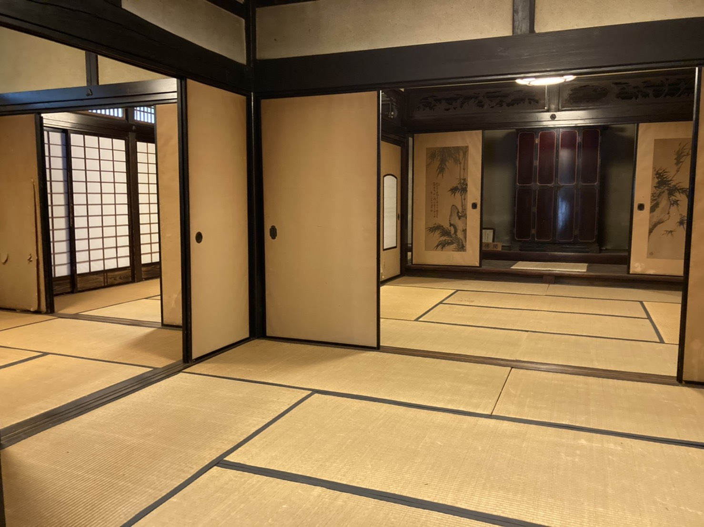
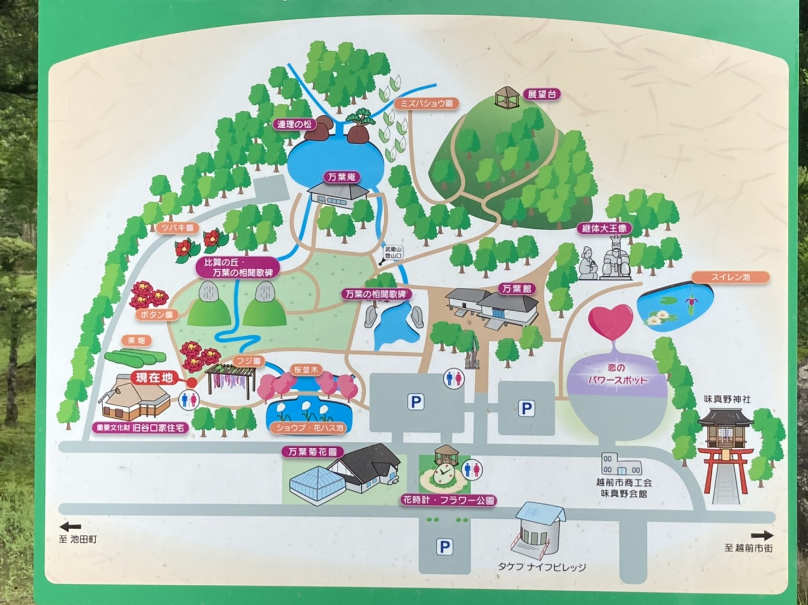

む ： 昔の民家 谷口家 囲炉裏の香りで 江戸気分
一言でいうと？
味真野苑の中にある江戸時代の古民家

味真野地区にある味真野苑には、江戸時代の古民家と言われる「(旧)谷口家」があります。
昭和52年に国の重要文化財に登録されています。
誰のお家？
横市町の農家さん
農家の家ですが、元から味真野苑にあったわけではなく、横市町にあったものが移動してきました。
1808年に建てられたといわれています。
かやぶきの屋根で、角が生えたような三角形が特徴的です！
中には入れる？
入れます！


中に入ると照明がついていて、広い土間や座敷が見えます。
真ん中には囲炉裏があり、週に3回火を入れているので、屋敷内はいぶしたいい香りがします。
どうやって行くの？
味真野苑の左がわ
住所 ≫ 越前市余川町55-1
休館日 ≫ 月曜日
入場料 ≫ 無料
万葉菊花園近くの入り口からずーっと左に歩いていくと谷口家につきます！
▼味真野苑のマップ

谷口家は、一度中でお茶会を開いたことがあります。昔の家とはいえ造りがしっかりしているからできることですね。重要文化財でここまで触れ合えるものは珍しいのではないでしょうか？いぶした香りはとっても落ち着くので一休みに最適です。